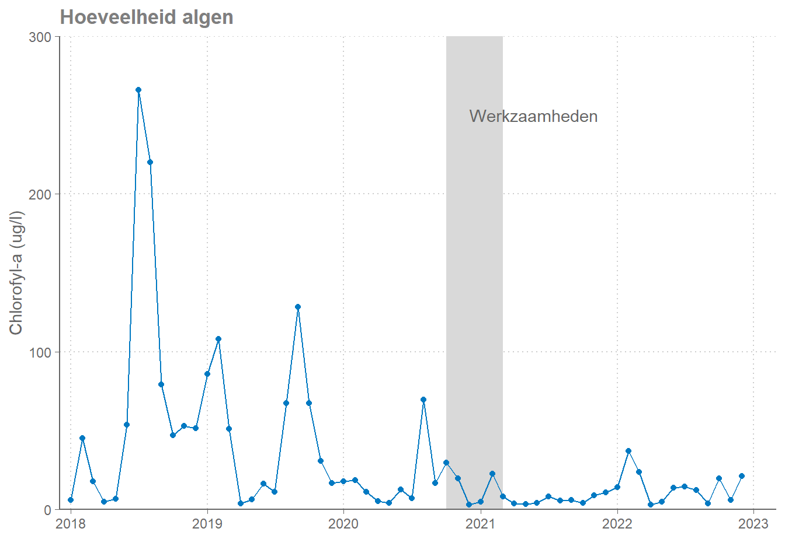
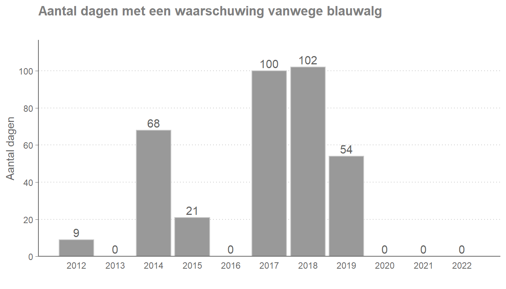
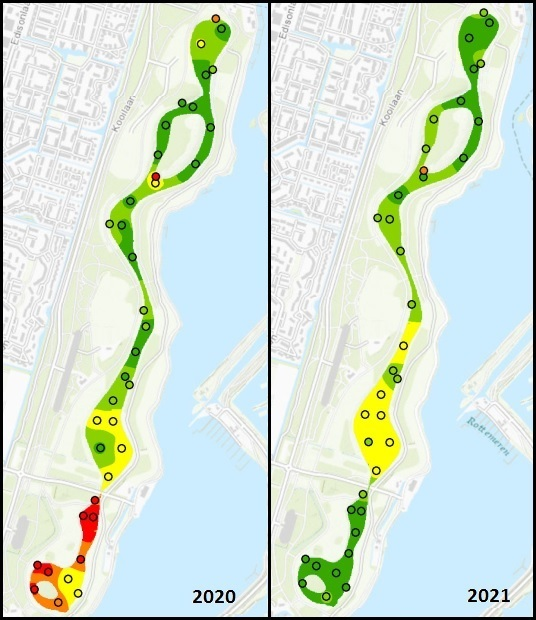
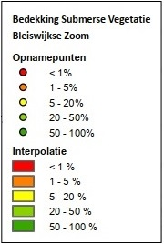

Hoofdstuk 2 Resultaten
2.1 Fosfaat
De belangrijkste maatregelen waren erop gericht om de aanvoer van fosfaatrijk water te verminderen en om het vrijkomen van fosfaat uit de waterbodem tegen te gaan.
In de grafiek hieronder is te zien dat de fosfaatconcentratie sinds het uitvoeren van de maatregelen sterk is afgenomen en laag blijft.
Figuur 2.1: Fosfaatconcentratie in de Bleiswijkse Zoom van 2018-heden. Het grijze vlak geeft de periode in waarin is gebaggerd, de bypass is aangelegd, en Phoslock is toegepast.
2.2 Phoslock
Om fosfaat vast te leggen is Phoslock gebruikt.1 Phoslock bindt fosfaat snel en permanent. De werkzame stof in Phoslock is lanthaan. Het lanthaan in Phoslock is vastgelegd in een kristalstructuur van kleimineralen waardoor het niet zomaar vrij kan komen. Phoslock is daarom veilig om te gebruiken.
De concentratie opgelost lanthaan is tijdens en na de toepassing van Phoslock gemeten. De metingen laten zien dat de stof enkel in extreem lage concentraties ongebonden aanwezig is.2
Figuur 2.2: Lanthaanwaarden in de Bleiswijkse Zoom van begin 2021-heden. Sinds januari 2022 is een nieuwe meetmethode beschikbaar waarmee lagere concentraties precies bepaald kunnen worden.
2.3 Zwemwaterwaterkwaliteit
2.3.1 Algengroei
Aan de noordkant van de Bleiswijkse Zoom is een zwemstrand. Omdat dit een officiële zwemlocatie is worden hier tijdens het zwemseizoen regelmatig onderzoek gedaan naar giftige blauwalgen. Als de concentratie hiervan te hoog is wordt een waarschuwing of negatief zwemadvies afgegeven.
Als er veel voedingsstoffen in het water zijn kunnen algen snel groeien. Hierdoor is er een grote kans op (blauw)algenbloei. Om de hoeveelheid algen te meten wordt de hoeveelheid chlorofyl gemeten. Tijdens het groeiseizoen kan de hoeveelheid algen sterk schommelen. De chlorofylconcentraties laten zien dat er sinds de maatregelen weinig algen aanwezig zijn in de Bleiswijkse Zoom.

In de jaren voor de maatregelen kwam het vaak voor dat het zwemmen werd afgeraden vanwege blauwalgen. Sinds de maatregelen zijn er nauwelijks meer blauwalgen aanwezig. Vanaf 2020 is er geen waarschuwing vanwege blauwalgen meer geweest.

2.3.2 Zwemmersjeuk
Na de maatregelen zijn er geen problemen geweest met blauwalgen. Wel zijn er bij HHSK signalen binnengekomen over zwemmersjeuk. Het betrof een zeer beperkt aantal meldingen (minder dan 5). Zwemmersjeuk wordt veroorzaakt door een parasiet die voorkomt in slakken. Zwemmersjeuk is niet gevaarlijk, maar is wel hinderlijk.
Door de maatregelen groeien er meer waterplanten in de Bleiswijkse Zoom. Ook is de visstand veranderd. Hierdoor kunnen meer slakken voorkomen en kan er zwemmersjeuk optreden. Als de visstand zich heeft aangepast aan de nieuwe omstandigheden verwachten we dat de overlast door zwemmersjeuk afneemt.
2.4 Visstand
In de Bleiswijkse Zoom kwamen zeer veel bodemwoelende vissen voor. Dit waren vooral brasems en karpers. De meeste van deze vissen zijn gevangen en verplaatst naar andere viswateren. De beoogde omstandigheden in de plas zijn niet geschikt voor de grote hoeveelheid vis die in de plas aanwezig was. Door ze te verplaatsen werd de hoeveelheid vis in de Bleiswijkse Zoom beter in evenwicht met de nieuwe omstandigheden. Doordat de bodemwoelende soorten nu minder voorkomen krijgen planten en andere soorten vissen meer kans.
In de visbemonstering van 2021, na de maatregelen, zijn beperkte hoeveelheden karpers en brasems gevonden. De verhoudingen tussen bodemwoelende vissen en andere vissoorten zijn nu veel beter. De ontwikkeling van de visstand wordt de komende jaren gevolgd.
2.5 Waterplanten
Door de maatregelen is het water in de Bleiswijkse Zoom helderder geworden. Dat zorgt ervoor dat onderwaterplanten beter kunnen groeien. In 2021 is er een grotere soortenrijkdom aan onderwaterplanten gevonden. In totaal zijn negen soorten aangetroffen. Dit is het hoogste aantal tot nu toe. Er zijn twee verschillende soorten kranswieren3 aangetroffen. Kranswieren zijn een indicator van goede waterkwaliteit. Ook bieden de waterplanten een goed habitat voor zoöplankton. Hiervan zijn veel plantminnende soorten gevonden.
In de vlakdekkende plantenopnamen van 2020 en 2021 is ook duidelijk het effect van aanwezigheid van bagger en een hoge visstand te zien. Tijdens de werkzaamheden (2020) zijn de vissen die in de Bleiswijkse Zoom zouden blijven verzameld in het zuidelijkste deel van de plas. Dit deel (het Galgje) werd daarvoor afgesloten van de rest van de plas. De visstand was hierdoor tijdelijk veel hoger. In 2020 zijn in het Galgje veel minder onderwaterplanten gevonden dan in de rest van de plas. Na de werkzaamheden in de rest van de plas zijn de vissen overgezet en is het Galgje gebaggerd. De effecten van het baggeren en de visstand in het Galgje zijn goed te zien in het verschil tussen de hoeveelheid planten in 2020 en 2021.

2.6 Samenvattend
Een belangrijk doel van de maatregelen was om de hoeveelheid voedingsstoffen, vooral fosfaat, te verminderen. De hoeveelheid fosfaat is sterk afgenomen. Hieraan is te zien dat de maatregelen effectief zijn. Doordat er minder fosfaat aanwezig is, is er sinds 2020 ook geen blauwalgenbloei meer opgetreden.
Tijdens en na de toepassing van Phoslock is de hoeveelheid lanthaan in het water gemeten. Op de meeste momenten was de hoeveelheid lanthaan zo laag dat deze niet meetbaar was. Hierdoor is bevestigd dat Phoslock veilig toegepast kan worden.
Een belangrijke aanleiding voor de maatregelen in de Bleiswijkse Zoom is het bereiken van de KRW-doelen. Door de maatregelen is het ecosysteem van de Bleiswijkse Zoom sterk veranderd. De hoeveelheid algen is afgenomen. De hoeveelheid en diversiteit van waterplanten is toegenomen. De visstand past beter bij een ecosysteem met minder voedingsstoffen. Dit zijn belangrijke verbeteringen. We verwachten dat met de verdere ontwikkeling van het ecosysteem de KRW-doelen bereikt worden.
De eerste ontwikkelingen in de Bleiswijkse Zoom zijn gunstig. De waterkwaliteit is verbeterd. De ontwikkelingen passen bij de verwachtingen die we hebben van de uitgevoerde maatregelen. Wij verwachten dat de verbeteringen zullen doorzetten en dat deze verbetering blijvend zal zijn.
2.7 Doelbereik
Het primaire doel van de maatregelen in de Bleiswijkse Zoom was om te zorgen dat de Bleiswijkse Zoom voldoet aan de doelen van de Kaderrichtlijn Water. De maatregelen hebben gezorgd voor een verandering in het ecosysteem van de Bleiswijkse Zoom zoals hierboven beschreven is. Zijn daarmee dan ook de KRW-doelen voor voor algen, waterplanten, macrofauna (kleine waterdieren) en vissen bereikt? Die vraag kan op dit moment nog niet volledig beantwoord worden omdat het tijd kost voor het effect van de maatregelen helemaal doorgewerkt is op het ecosysteem. Wel is het mogelijk om een beeld te geven van de huidige situatie in relatie tot de KRW-doelen.
- Algen: in 2021 voldeden algen aan het KRW-doel. Algen reageren relatief snel op verandering en daarom is de verwachting dat de toestand voor algen goed zal blijven.
- Waterplanten: De waterplanten hebben in de Bleiswijkse Zoom een positieve ontwikkeling doorgemaakt. Er zijn in 2021 diverse soorten aangetroffen die passen bij een goede waterkwaliteit. De waterplanten voldeden in 2021 bijna aan het KRW-doel. Voor waterplanten is nog een verdere positieve ontwikkeling te verwachten die naar verwachting leidt tot het bereiken van de doelen.
- Macrofauna: Van macrofauna zijn nog geen meetresultaten beschikbaar na de maatregelen. Gezien de gunstige ontwikkeling bij de waterplanten valt bij macrofauna ook een verbetering te verwachten.
- Vissen: De maatregel waarbij de visstand is verlaagd heeft een groot effect op de huidige visstand. Er zal zich in de komende jaren een visstand ontwikkelen die past bij de nieuwe omstandigheden. Technisch gezien voldoet de visstand op dit moment aan het KRW-doel; maar omdat de visstand zich nog moet ontwikkelen zegt dat nog niet zoveel over de uiteindelijk visstand en de bijbehorende beoordeling. De verwachting is overigens dat ook de toekomstige visstand zal voldoen aan het KRW-doel.
In de huidige situatie voldoet de Bleiswijkse Zoom al deels aan de KRW-doelen en is de verwachting dat deze uiteindelijk door een verdere natuurlijke ontwikkeling van het ecosysteem helemaal zal gaan voldoen.
Notitie van HHSK over Phoslock.
In dit filmpje over Phoslock wordt uitgelegd hoe het werkt.↩︎Enkele weken na het uitvoeren van de werkzaamheden zijn op 3 datums en op 3 van de 5 meetpunten verhoogde meetwaarden van lanthaan gerapporteerd (10 - 47 ug/l). Deze waarden zijn vermoedelijk het gevolg van verontreiniging bij het filtratie- of analyseproces. De verhogingen zijn bijvoorbeeld niet consistent in ruimte en tijd. In de handhavingsmonsters die tegelijkertijd ter controle zijn uitgevoerd zijn deze verhogingen niet aangetroffen. Dit bevestigt het vermoeden dat het hier gaat om een meetfout.↩︎
Chara globularis (Brokkelig kransblad) en Chara contraria (Breekbaar kransblad)↩︎